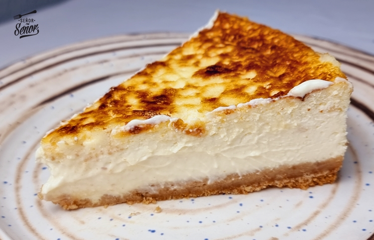

Pastís de Formatge
Ingredients
- 250g de formatge cremós (tipo Philadelphia)
- 200g de galetes digestive
- 100g de mantega derretida
- 100g de sucre
- 3 ous
- 1 culleradeta d'extracte de vainilla
- 200ml de nata per muntar
Passos
- Triturar les galetes i barrejar-les amb la mantega derretida.
- Col·locar la barreja en la base d'un motlle i premsar bé.
- En un bol, batre el formatge amb el sucre i la vainilla.
- Afegeix els ous un a un, batent bé després de cada afegit.
- Incorporar la nata muntada amb moviments suaus.
- Abocar la mescla sobre la base de galeta.
- Enfornar a 180 graus durant 45 minuts.
- Deixar refredar i refrigerar durant unes hores abans de servir.
Tornar a la pàgina principal
